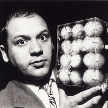

Se la Pop Art è un fenomeno in prevalenza americano, la sua propaggine europea più vicina prende il nome di Nouveau Réalisme,
di cui si sente parlare per la prima volta nel 1960, in Italia.
Con il Nouveau Réalisme si parla di riappropriazione del reale, si costruisce una nuova esperienza sociologica, concentrata sul fascino dell’oggetto e di tutti i materiali che, al di là di pittura e scultura, hanno la stessa dignità artistica.
Essi non esprimono significati perché rappresentati ma perché presenti in tutta la loro vissuta fisicità.
Il nuovo fermento ha alla sua base un forte interesse provocatorio ed ideologico: all’interno delle opere realizzate si possono cogliere messaggi di denuncia e critica verso la cultura moderna, sempre più abituata alla logica del consumo e dell’uso e getta, dimenticata invece dalla possibilità di riciclo e risparmio.
È con queste premesse che spazzatura e rottami diventando i protagonisti prediletti di questi nuovi artisti.